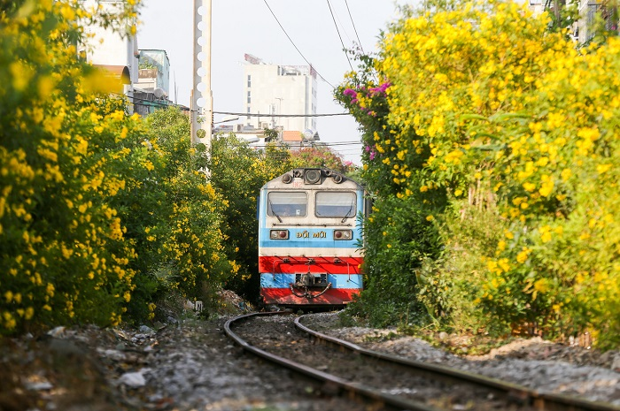

Kết quả PISA năm 2022 mà OECD vừa công bố cho thấy, học sinh Việt Nam tụt hạng so với lần đánh giá gần nhất năm 2018 và 2 lần đánh giá...
Trong khi hiệu quả của chăm sóc, điều trị bằng tế bào gốc còn khác nhau, nhiều người Việt đã chi khoản tiền lớn ra nước ngoài để chăm sóc,...

Thủ tướng Phạm Minh Chính yêu cầu hoàn thành 3 dự án đường bộ cao tốc với tổng chiều dài 70 km cầu Mỹ Thuận 2, Mỹ Thuận - Cần Thơ,...